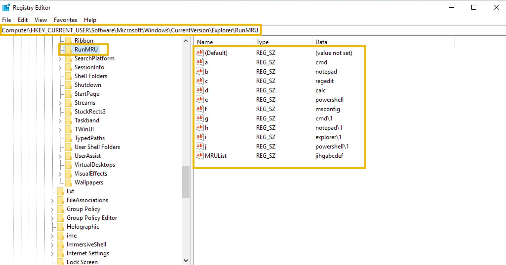
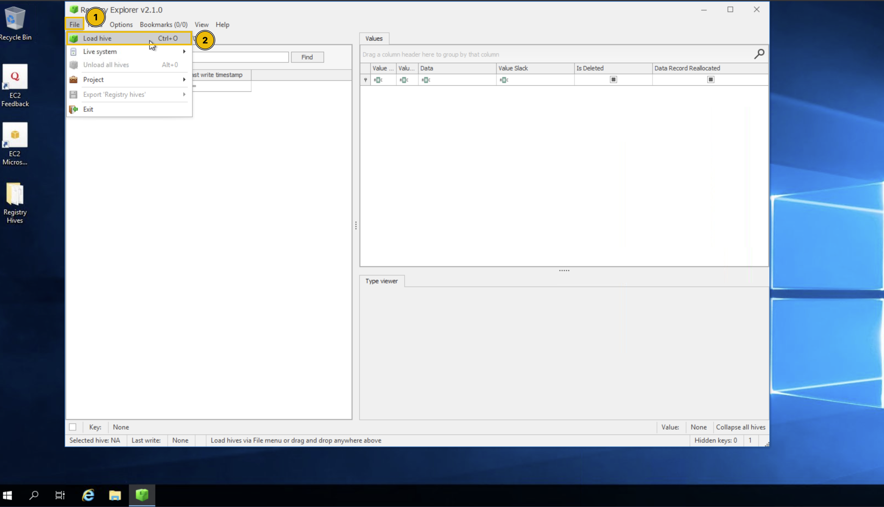
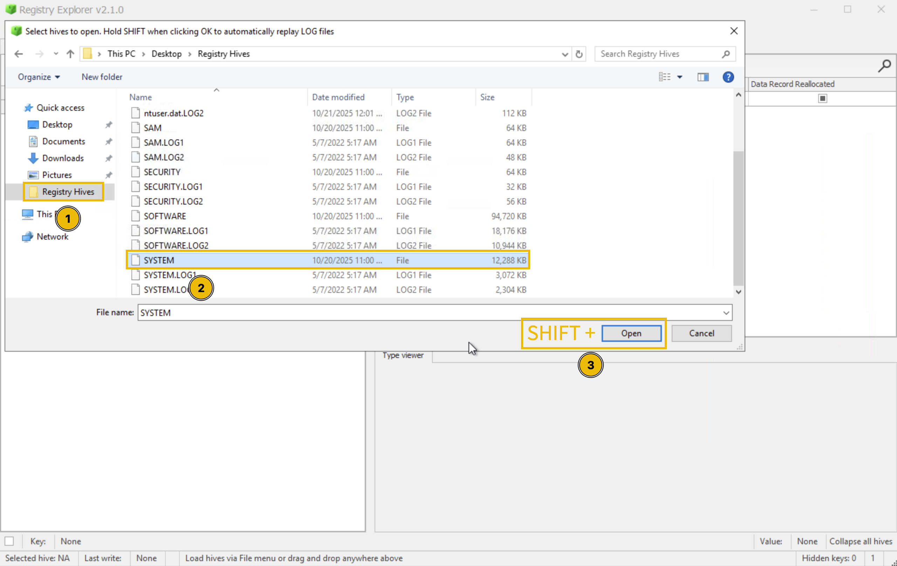
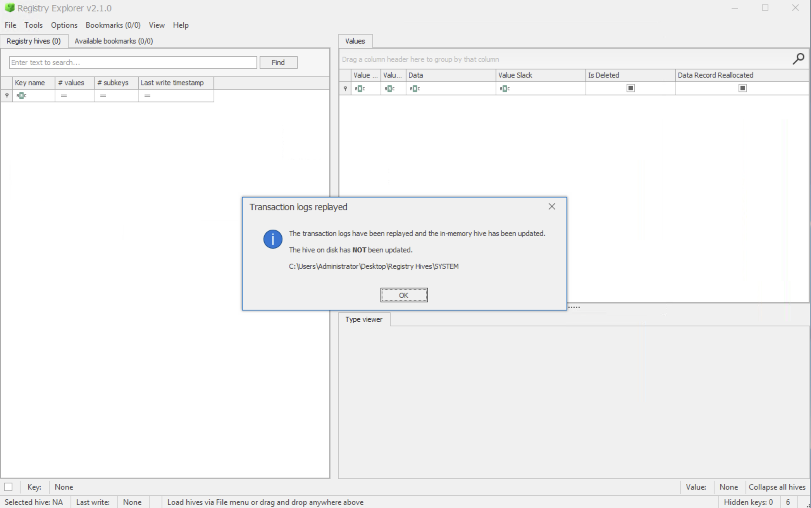
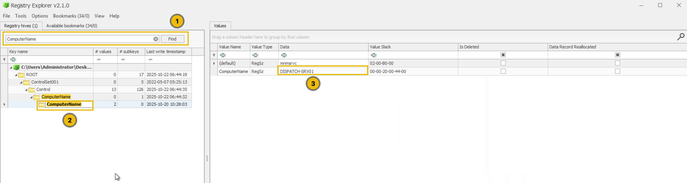
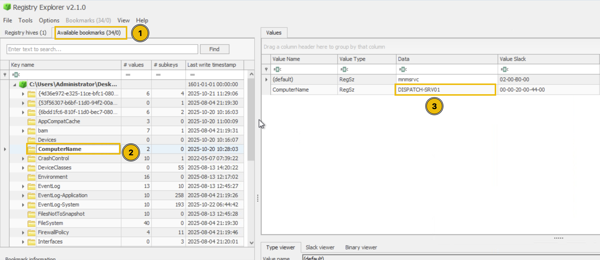

Your brain stores all the information that you need to function effectively. This includes:
These are just a few things. Your brain knows pretty much everything about you. It's just like a database storing the human configuration.
Windows OS is not a human, but it also needs a brain to store all its configurations. This brain is known as the Windows Registry. The registry contains all the information that the Windows OS needs for its functioning.
Operating System (OS) is a layer between the hardware and the applications. From the application's perspective, the OS provides an interface to access the different hardware components, such as CPU, RAM, and disk storage. Examples of OS are Android, FreeBSD, Linux, macOS, and Windows.
Now, this Windows brain (Registry) is not stored in one single place, unlike a human brain, which is situated in one single place inside the head. It is made up of several separate files, each storing information on different configuration settings. These files are known as Hives.
Let's take a look at all these hives in the table below. The first column contains the hive names, the second column contains the type of configuration settings that each hive stores, and the third column contains the location of each hive on the disk.
| Hive Name | Contains | Location |
|---|---|---|
| SYSTEM | • Services • Mounted Devices • Boot Configuration • Drivers • Hardware | C:\Windows\System32\config\SYSTEM |
| SECURITY | • Local Security Policies • Audit Policy Settings | C:\Windows\System32\config\SECURITY |
| SOFTWARE | • Installed Programs • OS Version and other info • Autostarts • Program Settings | C:\Windows\System32\config\SOFTWARE |
| SAM | • Usernames and their Metadata • Password Hashes • Group Memberships • Account Statuses | C:\Windows\System32\config\SAM |
| NTUSER.DAT | • Recent Files • User Preferences • User-specific Autostarts | C:\Users\username\NTUSER.DAT |
| USRCLASS.DAT | • Shellbags • Jump Lists | C:\Users\username\AppData\Local\Microsoft\Windows\USRCLASS.DAT |
Note: The configuration settings stored in each hive listed above are just a few examples. Each hive stores more than these.
Now that you understand where these Registry Hives are stored, you may be tempted to double-click and open these files from their respective locations to view the data they contain. But here's the twist. These Registry Hives contain binary data that cannot be opened directly from the file. So, double-clicking them would only display things you won't ever understand. Then how can we possibly view the registry data?
The Windows OS has a built-in tool known as the Registry Editor, which allows you to view all the registry data available in these hives. You can go ahead and open this tool by simply typing Registry Editor in your search bar.
As you can see in the Registry Editor screenshot above, there are some folders named HKEY_LOCAL_MACHINE, HKEY_CURRENT_USER, and more. But didn't we expect SYSTEM, SECURITY, SOFTWARE, etc., to be seen so we can view their data? Don't worry, Windows organizes all the Registry Hives into these structured Root Keys. Instead of seeing the Registry Hives, you would always get these registry root keys whenever you open the registry. Now, which registry key contains which registry hive's data? To answer this question, we have a table below that maps the registry keys with their respective Registry Hives.
| Hive on Disk | Where You See It in Registry Editor |
|---|---|
| SYSTEM | HKEY_LOCAL_MACHINE\SYSTEM |
| SECURITY | HKEY_LOCAL_MACHINE\SECURITY |
| SOFTWARE | HKEY_LOCAL_MACHINE\SOFTWARE |
| SAM | HKEY_LOCAL_MACHINE\SAM |
| NTUSER.DAT | HKEY_USERS\<SID> and HKEY_CURRENT_USER |
| USRCLASS.DAT | HKEY_USERS\<SID>\Software\Classes |
In the table above, you can see that most of the Registry Hives are located under the HKEY_LOCAL_MACHINE (HKLM) key. We can verify this by clicking on the little toggle arrow at the on the left side of the HKLM key in the Registry Editor, as shown in the screenshot below:
As you can see, the SYSTEM, SOFTWARE, SECURITY, and SAM hives are under the HKLM key. NTUSER.DAT and USRCLASS.DAT are located under HKEY_USERS (HKU) and HKEY_CURRENT_USER (HKCU).
Note: The other two keys (HKEY_CLASSES_ROOT (HKCR) and HKEY_CURRENT_CONFIG (HKCC)) are not part of any separate hive files. They are dynamically populated when Windows is running.
So far, we have learned what the registry is, where it is located (in separate Registry Hives), and how to view the registry through the Registry Editor, which displays the registry keys backed by these Registry Hives.
Now, let's see how we can actually extract information from the registry. Think of it like navigating to different files in the file explorer. If you know the path where the file is stored, you can go directly to that location to find the file. Let's take a look at a few examples:
Note: The registry key contents explained in this example are not available in the attached VM.
The registry stores information on the USB devices that have been connected to the system. This information is present in the SYSTEM hive. To view it:
HKEY_LOCAL_MACHINE\SYSTEM\CurrentControlSet\Enum\USBSTOR.The registry stores information on the programs that the user ran using the Run dialog Win + R. This information is present in the NTUSER.DAT hive. To view it:
HKEY_CURRENT_USER\Software\Microsoft\Windows\CurrentVersion\Explorer\RunMRU.
Since the registry contains a wide range of data about the Windows system, it plays a crucial role in forensic investigations. Registry forensics is the process of extracting and analyzing evidence from the registry. In Windows digital forensic investigations, investigators analyze registry, event logs, file system data, memory data, and other relevant data to construct the whole incident timeline.
The table below lists some registry keys that are particularly useful during forensic investigations.
| Registry Key | Importance |
|---|---|
| HKCU\Software\Microsoft\Windows\CurrentVersion\Explorer\UserAssist | It stores information on recently accessed applications launched via the GUI. |
| HKCU\Software\Microsoft\Windows\CurrentVersion\Explorer\TypedPaths | It stores all the paths and locations typed by the user inside the Explorer address bar. |
| HKLM\Software\Microsoft\Windows\CurrentVersion\App Paths | It stores the path of the applications. |
| HKCU\Software\Microsoft\Windows\CurrentVersion\Explorer\WordWheelQuery | It stores all the search terms typed by the user in the Explorer search bar. |
| HKLM\Software\Microsoft\Windows\CurrentVersion\Run | It stores information on the programs that are set to automatically start (startup programs) when the users logs in. |
| HKCU\Software\Microsoft\Windows\CurrentVersion\Explorer\RecentDocs | It stores information on the files that the user has recently accessed. |
| HKLM\SYSTEM\CurrentControlSet\Control\ComputerName\ComputerName | It stores the computer's name (hostname). |
| HKLM\SOFTWARE\Microsoft\Windows\CurrentVersion\Uninstall | It stores information on the installed programs. |
Numerous other registry keys can be used for extracting important evidence from a Windows system during an incident investigation. The investigation of these registry keys during forensics cannot be done via the built-in Registry Editor tool. It is because the Registry analysis cannot be done on the system under investigation (due to the chance of modification), so we collect the Registry Hives and open them offline into our forensic workstation. However, the Registry Editor does not allow opening offline hives. The Register editor also displays some of the key values in binary which are not readable.
To solve this problem, there are some tools built for registry forensics. In this task you will use the Registry Explorer tool which is a registry forensics tool. It is open source and can parse the binary data out of the registry, and we can analyze it without the fear of modification.
In this practical example, we will use the Registry Explorer tool to analyze the Registry Hives from the compromised system, dispatch-srv01. The Registry Hives have been collected and are available in the folder C:\Users\Administrator\Desktop\Registry Hives on the machine attached to this task.
Step 1: Launch Registry Explorer
Click on the Registry Explorer icon pinned to the taskbar of the lab machine to launch it.
Step 2: Load the Registry Hives
Once Registry Explorer opens with an empty interface, follow these steps to load the hives:

Step 3: Handling Dirty Hives
While loading Registry Hives, it is important to know that these Registry Hives can sometimes be "dirty" when collected from live systems, meaning they may have incomplete transactions. To ensure clean loading:
1.On the Load hives pop-up, navigate to C:\Users\Administrator\Desktop\Registry Hives
2. 2. Select the desired hive file (e.g., SYSTEM)

Step 4: Investigating Registry Keys
After loading the SYSTEM hive, you can navigate to specific registry keys for investigation. Let's practice by finding the computer name:
ROOT\ControlSet001\Control\ComputerName\ComputerName. Or you can also just type "ComputerName" in the search bar to quickly locate the key, as shown below.
DISPATCH-SRV01.
Now that you understand how to load hives and navigate in Registry Explorer, you're ready to begin your forensic investigation and uncover evidence of the TBFC intrusion on the Dispatch server!